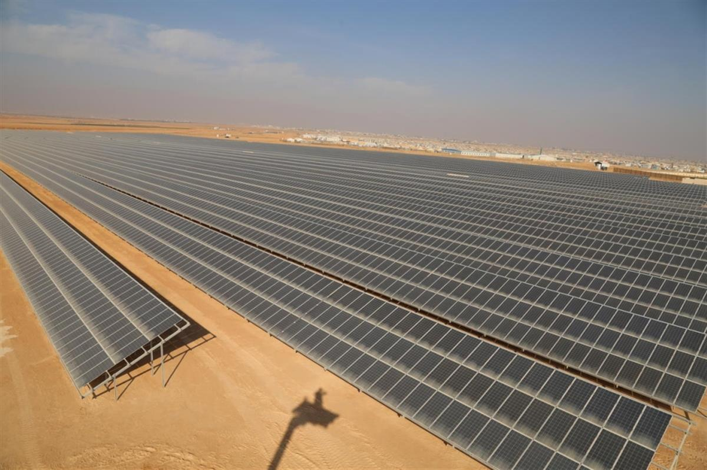
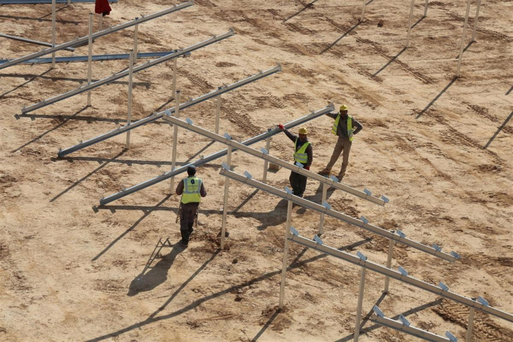

File photo of Za’atari refugee camp in April 2016. © UNHCR/Jordi Matas
Jordan’s Za’atari camp goes green with new solar plant
Largest project of its kind in a refugee camp will provide welcome additional power to residents and slash carbon emissions and energy costs
By Marwa Hashem | 14 November 2017 | Français |عربي
ZA’ATARI REFUGEE CAMP, Jordan – The largest solar plant ever built in a refugee camp went live on Monday, providing clean and much-needed additional power to 80,000 Syrian refugees living in Jordan’s Za’atari camp.
The plant will reduce annual carbon dioxide emissions from the camp by 13,000 metric tonnes per year, equivalent to 30,000 barrels of oil. It will also deliver annual savings of around US$5.5 million, which UNHCR – the UN Refugee Agency – will be able to reinvest in vital humanitarian assistance.
The 12.9 megawatt peak solar photovoltaic plant was funded by the Government of Germany through the KfW Development Bank at a cost of 15 million euros (US$ 17.5 million).
Open on original site ↗Za’atari refugee camp goes green
Electricity provides an essential lifeline for camp residents, from lighting shelters to preserving food and maintaining hygiene. Previously, however, the high cost of powering the camp has meant that electricity use in refugee shelters was rationed to six to eight hours a day after sunset.
The new solar plant will provide families with between 12 and 14 hours electricity each day. Residents say the extra power will vastly improve their lives, allowing them to complete their daily chores earlier and prevent children from having to play outside on the dusty streets after dark.

Jordan’s Za’atari refugee camp made the switch to clean energy on Monday 13 November, with the inauguration of the largest solar power plant ever built in a refugee setting. © UNHCR/Yousef Al Hariri
Ilham, a 41-year-old mother of three from Dara’a in southern Syria, said the extra hours of electricity would help her keep her children healthy and safe. “Now I will be able to do the laundry during the day, rather than at night when it doesn’t dry and we get sick from wearing wet clothes.”
“It’s also safer for my children. It means they can stay indoors and do their homework or watch some TV, rather than playing outside on the streets until after dark,” she added.
Her son Mohammed, aged 10, said the new plant would help him with his schoolwork. “My family and I use electricity for doing the laundry and watching TV, but with more hours of electricity I will definitely study more.”
The solar plant was constructed on the outskirts of the camp, consisting of 40,000 photovoltaic panels arranged in rows hundreds of metres long covering an area roughly the size of 33 soccer pitches. The project provided employment to workers from the local Jordanian community, as well as 75 Syrian refugees living in the camp under an existing cash-for-work scheme.
Gasem, a 31-year-old Syrian who has lived in the camp since 2012, joined the project when it began in April. As well as benefiting the camp as a whole, he said the construction of the new plant had helped him gain new skills and experience that would stand him in good stead for the future.

Construction of the solar plant provided employment for local Jordanian workers and 75 Syrian refugees living in the camp. © UNHCR/Yousef Al Hariri
“Myself and the other Syrian refugees who worked on this project benefited a lot from the experience. We have developed our knowledge and technical skills, and it has also enabled me to find a job working on another solar project outside the camp,” he said.
All of the electricity generated by the new plant will be used to power refugees’ shelters, ensuring that residents are the prime beneficiaries. The solar plant is connected to Jordan’s national grid, meaning any unused power is fed back into the network to support the energy needs of the local community and help the country meet its renewable energy goals.
UNHCR Representative in Jordan Stefano Severe said the solar plant would help maintain vital humanitarian assistance to some 650,000 registered Syrian refugees in the country.
“The plant will deliver huge savings in energy bills for UNHCR, which will be reinvested in other much-needed assistance. With the Syrian refugee crisis already into its seventh year, donor fatigue is setting in, making such savings essential for UNHCR to continue providing assistance to refugees in Za’atari camp and beyond,” Severe said.
SOURCE: UNHCR